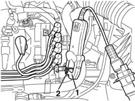
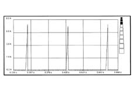
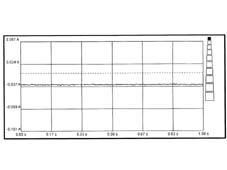

5510CE IGNITION CONTROL SIGNAL CHECK
- Path
- Test > 55 ELECTRICAL EQUIPMENT > 5510 ENGINE IGNITION > 5510CE IGNITION CONTROL SIGNAL CHECK
- Kind
- test / check procedure
- Applies to
- engines: 1.6 16v; all production periods; only with equipment: BIPOWER
- Interactive page
- https://sloeber94.github.io/elrnDB-fMltpl/en/#/186003496
Applies to: engines: 1.6 16v; all production periods; only with equipment: BIPOWER
1. Connect the ammeter pliers N° 1806505000 to the diagnostic equipment using the EX01 cable.
- Position the pliers with the jaws closed and the red LEDs off near the measurement point.
- Zero the pliers using the "CALIBRATION" button.
2. Position the wire connected to pin 1 of the ignition coil (primary control cable) so that it passes inside the ammeter plier jaws and, before taking any reading, make sure that the red LEDs in the actual pliers are off.

- Select the "INSTRUMENT" ambient on the diagnostic equipment and then the "AMMETER" function.
- Select "10 A PLIERS".
- Select the basic time at 1 sec.
- Press the Start button and take the reading.
- The graph below shows the normal absorption of the coil primary winding with the engine at operating temperature and idling.

- Repeat the same test positioned on the wire connected to pin 3 of the ignition coil and check that the same signal is present.
- The signal below contains an interrupted or earthed ignition signal.

If the ignition control signals to the coil are not present check the continuity and insulation to earth of the following wiring:
- connection between pin 1 of the ignition coil and pin 59 of the engine control unit (petrol)
- connection between pin 3 of the ignition coil and pin 66 of the engine control unit (petrol).